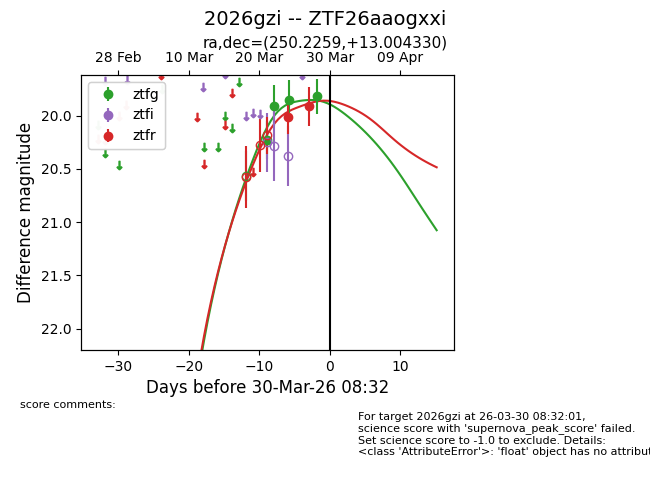
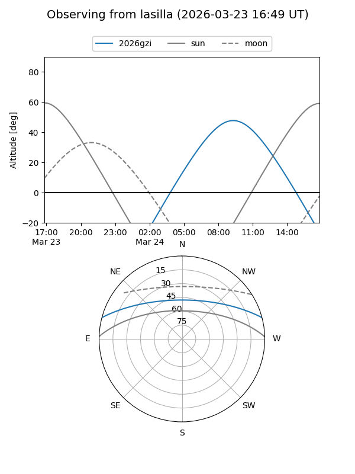
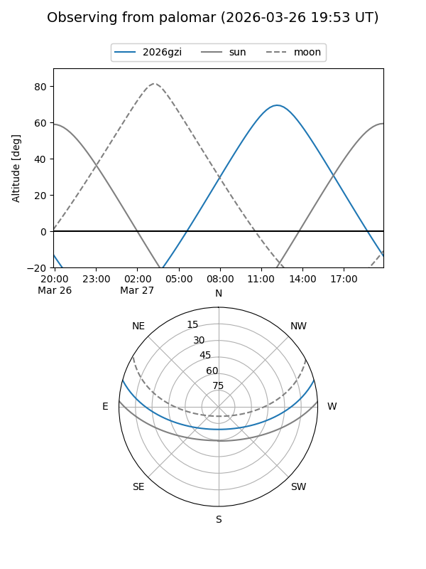
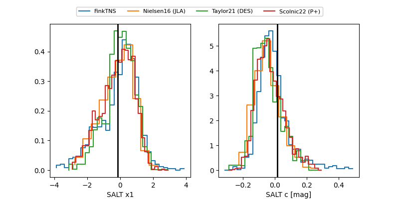

2026gzi
Target 2026gzi at 2026-03-30 08:34
Aliases and brokers:
FINK: link
Lasair: link
ALeRCE: link
TNS: link
YSE: link
alt names
ZTF26aaogxxi (ztf,fink_ztf)
2026gzi (tns,yse)
Coordinates:
equatorial (ra, dec) = 250.2259,+13.00433
equatorial (HMS+DMS) = 16:40:54.22,+13:00:15.59
galactic (l, b) = (30.1884,+34.76679)
Flags:
Photometry:
last ztfg=19.82, ztfr=19.91
4 ztfg, 2 ztfr detections
Lightcurve

Visibility


Additional plots
